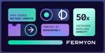
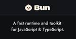
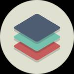
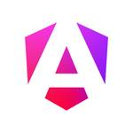
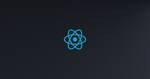

ブログ一覧（更新順）
Honeybadger Developer Blog https://www.honeybadger.io/blog
Tutorials, product info and good advice from the Honeybadger crew.
4時間前
Bits and Pieces - Medium https://blog.bitsrc.io?source=rss----5c2fdf847f4a---4
Insightful articles, step-by-step tutorials, and the latest news on full-stack composable software development.
10時間前
Builder.io Blog https://www.builder.io/blog
Builder Blog for the latest insights, tips, and best practices for learning how to build fast digital experiences across all channels, faster.
13時間前

Frontend Masters Boost RSS Feed https://frontendmasters.com/blog
Frontend Masters Boost is a blog about web development. It's written by the team at Frontend Masters, course instructors from the industry, and curated guest authors. The goal is to help you on yo...
15時間前
Assetnote Research https://www.assetnote.io
Fundamentally change how you secure your attack surface. Assetnote's industry-leading Attack Surface Management Platform gives security teams continuous insight and control over their ever-evolving ex...
1日前
Saeloun Blog https://blog.saeloun.com/
Ruby on Rails and ReactJS consulting company. We also build mobile applications using React Native
1日前
pawelgrzybek.com https://pawelgrzybek.com/
Hi, I’m Paweł, a software developer from Poland, now living in Northampton, UK. I do stuff on the web, write about it, and listen to funky and jazz records after hours.
1日前
WorkOS Blog https://workos.com
Developer APIs / SDKs for enterprise-ready features like Single Sign-On (SSO/SAML), Passwordless Authentication, Directory Sync (SCIM), Audit Trail (SIEM), and more. Get started for free.
1日前
daverupert.com https://daverupert.com
The personal blog of Dave Rupert, web developer and podcaster from Austin, TX.
1日前
Articles on Smashing Magazine — For Web Designers And Developers https://www.smashingmagazine.com/
Magazine on CSS, JavaScript, front-end, accessibility, UX and design. For developers, designers and front-end engineers.
2日前
azukiazusa のテックブログ2
https://azukiazusa.dev
azukiazusaのテックブログ2です。週に1回 Web 開発に関する記事をお届けします。フロントエンドに関する分野の記事が中心です。
2日前
The Astro Blog https://astro.build/
Astro builds fast content sites, powerful web applications, dynamic server APIs, and everything in-between.
2日前
Checkly Blog: Monitoring Insights & Trends https://www.checklyhq.com/blog
Learn about the latest tips, tricks & how-to articles on advanced synthetic monitoring, Playwright & Monitoring as Code trends.
2日前
The Cloudflare Blog https://blog.cloudflare.com
Get the latest news on how products at Cloudflare are built, technologies used, and join the teams helping to build a better Internet.
4日前
PR TIMES 開発者ブログ https://developers.prtimes.jp
PR TIMESを日々開発するエンジニア、デザイナー、プロダクトマネージャーによる開発者ブログです。「行動者発の情報が、人の心を揺さぶる時代へ」をプロダクトで挑戦するチームの開発の裏話や技術共有メモ、ちょっと聞いて欲しいあれこれを発信します。
4日前
Link and Motivation Developers' Blog https://link-and-motivation.hatenablog.com/
リンクアンドモチベーションの開発者ブログです
4日前
1Password Blog https://blog.1password.com/
News, announcements and security tips from the 1Password blog.
4日前

Scott Logic https://blog.scottlogic.com
This blog shares Scott Logic's thoughts and ideas, covering topics across Tech, UX Design, Testing and Delivery.
4日前
MDN Blog https://developer.mozilla.org/en-US/blog/
The MDN Web Docs site provides information about Open Web technologies including HTML, CSS, and APIs for both Web sites and progressive web apps.
4日前
Inngest Product & Engineering Blog https://www.inngest.com
Inngest enables your team to develop durable functions in your current codebase with zero new infrastructure. Develop complex, long-running functions without queues, workers, or additional state manag...
4日前
Mux Blog - Video technology and more https://www.mux.com/blog
Mux builds powerful APIs for video encoding, hosting, streaming and data. Come see what we're up to, and let's build better video.
4日前
Google Online Security Blog http://security.googleblog.com/
The latest news and insights from Google on security and safety on the Internet
4日前
Sonar Blog RSS feed https://www.sonarsource.com
Sonar’s industry leading solution enables developers & development teams to write clean code and remediate existing code organically.
4日前
Mozilla Hacks – the Web developer blog https://hacks.mozilla.org/
Mozilla Hacks is written for web developers, designers and everyone who builds for the Web. Hacks is produced by Mozilla's Developer Relations team and features hundreds of posts from Mozilla ...
4日前

Sentry Blog RSS https://blog.sentry.io
Product, Engineering, and Marketing updates from the developers of Sentry.
5日前
StackBlitz Blog https://blog.stackblitz.com/
News, articles and all things JavaScript ecosystem - straight from the StackBlitz team! ⚡️
5日前
The GitHub Blog https://github.blog/
Updates, ideas, and inspiration from GitHub to help developers build and design software.
6日前
Write Software, Well
https://www.writesoftwarewell.com/
Spreading the joy of writing software using Ruby and Rails with the world.
6日前
Semaphore https://semaphoreci.com/
Semaphore CI/CD helps product teams deliver software with high standards of quality, security, and efficiency.
6日前

AppSignal https://blog.appsignal.com
Product updates and things we've learned while building AppSignal
6日前

Netlify RSS https://www.netlify.com/
Realize the speed, agility and performance of a scalable, composable web architecture with Netlify. Explore the composable web platform now!
7日前

Fermyon • Experience the next wave of cloud computing. https://www.fermyon.com/
Go from blinking cursor to deployed serverless app in 66 seconds. Experience the next wave of cloud computing with Fermyon.
7日前

bun.sh https://bun.sh
Bundle, install, and run JavaScript & TypeScript — all in Bun. Bun is a new JavaScript runtime with a native bundler, transpiler, task runner, and npm client built-in.
7日前

Robin Wieruch - Freelance Web Developer https://www.robinwieruch.de
Freelance Web Developer for React.js, Next.js and Node.js. Based in Berlin, German/English speaking. Consulting/Freelancing for Web Development project: Code Audits/Reviews, Workshops, Training, Imple...
8日前
Flatt Security Blog https://blog.flatt.tech/
株式会社Flatt Securityの公式ブログです。プロダクト開発やプロダクトセキュリティに関する技術的な知見・トレンドを伝える記事を発信しています。
8日前

Web Accessibility Initiative (WAI) https://www.w3.org/WAI/
Accessibility resources free online from the international standards organization: W3C Web Accessibility Initiative (WAI).
8日前
Tailwind CSS Blog https://tailwindcss.com/blog
All the latest Tailwind CSS news, straight from the team.
11日前
Escape - The API Security Blog https://escape.tech/blog/
Learn about GraphQL security, API security, performance, testing, and building production-ready APIs with the ecosystem's latest tools and best practices.
11日前
POSTD | ニジボックスが運営するエンジニアに向けたキュレーションメディア https://postd.cc
POSTD は、ニジボックスが運営する、エンジニアに向けたキュレーションメディアです。ニジボックスはWebサービスの企画、制作、開発、運用を一貫して担うリクルートの100%子会社です。 リクルートグループのオンラインサービスをはじめ、様々な業種・業界・業態のサービス開発を行っております。
11日前
Dagster Blog https://dagster.io/
The cloud-native open source orchestrator for the whole development lifecycle, with integrated lineage and observability, a declarative programming model, and best-in-class testability.
11日前
NodeJS Security & NodeJS Secure Coding’s Blog https://www.nodejs-security.com/
Master hands-on Node.js security with Node.js Secure Coding education and learn how to defend against JavaScript Command Injection vulnerabilities and gain backend development skills to exploit and pr...
11日前
David Walsh Blog https://davidwalsh.name
A blog featuring tutorials about JavaScript, HTML5, AJAX, PHP, CSS, WordPress, and everything else development.
13日前
デジタル庁デザインシステムβ版 https://design.digital.go.jp
デジタル庁デザインシステムは、スタイリングの考え方を提供するデザイン言語、情報の視覚表現とインタラクションを具現化するUIコンポーネント、ユーザビリティとアクセシビリティを踏まえた設計や実装のためのガイドラインから構成されるデザインアセットです。
13日前
Blog posts | RSS Feed https://www.apollographql.com
Unlock microservices potential with Apollo GraphQL. Seamlessly integrate APIs, manage data, and enhance performance. Explore Apollo's innovative solutions.
13日前
yield code(); https://www.yieldcode.blog/
Thoughts and stories on programming, the industry, and technology written by a software engineer
15日前

TkDodo's blog https://tkdodo.eu/blog
A technical blog about frontend-development, TypeScript and React
16日前
The Nuxt Blog https://nuxt.com/blog
Read the latest news about all Nuxt solutions, from framework announcements to integration tutorials.
18日前
Buf blog https://buf.build
Accelerate API development with Buf, the only end-to-end developer platform for Protocol Buffers and gRPC.
19日前
Chromium Blog http://blog.chromium.org/
News and developments from the open source browser project
19日前
Electron Blog https://electronjs.org/blog
Keep up to date with what's going on with the Electron project
21日前
text/plain https://textslashplain.com
ericlaw talks about security, the web, and software in general
21日前
Turbo Blog https://turbo.build
Turbo is an incremental bundler and build system optimized for JavaScript and TypeScript, written in Rust.
1ヶ月前
Josh Comeau's blog https://www.joshwcomeau.com/
Friendly tutorials for developers. Focus on React, CSS, Animation, and more!
1ヶ月前
Colin McDonnell @colinhacks https://colinhacks.com
Founder of Bagel Health, creator of Zod, open-sourcer, poptimist, movie buff. Wanna go to Taco Bell?
1ヶ月前

Angular Blog - Medium https://blog.angular.dev?source=rss----447683c3d9a3---4
The latest news and tips from the Angular team.
1ヶ月前

React Blog https://react.dev/
React is the library for web and native user interfaces. Build user interfaces out of individual pieces called components written in JavaScript. React is designed to let you seamlessly combine compone...
1ヶ月前
Accessibility in government https://accessibility.blog.gov.uk
This is for everyone: documenting how we rebuild inclusive digital services across government
2ヶ月前

SpiderMonkey JavaScript/WebAssembly Engine https://spidermonkey.dev/
SpiderMonkey is Mozilla’s JavaScript and WebAssembly Engine, used in Firefox, Servo and various other projects. It is written in C++ and Rust.
2ヶ月前
Unicorn Utterances's Atom Feed https://unicorn-utterances.com
Learning programming from magically majestic words. A place to learn about all sorts of programming topics from entry-level concepts to advanced abstractions
2ヶ月前
The Guild Blog https://the-guild.dev
Open Source developers with experience of working with the largest companies and applications. GraphQL consulting, workshops and trainings.
2ヶ月前
Google Tag Manager and Google Analytics on Simo Ahava's blog https://www.simoahava.com/
Simo Ahava is a Google Developer Expert for Google Analytics and Google Tag Manager. This is a blog all about web analytics development.
2ヶ月前
Blog | Alex Harri https://alexharri.com
Welcome to my personal website and blog. I write about TypeScript and other software engineering topics.
2ヶ月前
Nx Devtools - Medium https://blog.nrwl.io?source=rss----1e21061103c7---4
Smart, Fast and Extensible Build System with First-Class Monorepo Support.
2ヶ月前
Nicholas Ray's blog https://www.nray.dev/
Front-end development tips that improve page speed, user happiness, and business success
3ヶ月前
ClarityDev blog | RSS Feed https://claritydev.net
Front-end web developer. Based in Helsinki, Finland.
3ヶ月前
Learning TypeScript Blog https://www.learningtypescript.com/articles
Articles on TypeScript features. Syntax, type checking, and more!
3ヶ月前
Packt Hub
https://hub.packtpub.com
The latest technology news, analysis, interviews and tutorials from the Packt Hub, including Web Development, Cloud & Networking and Cyber Security
4ヶ月前
Shopify Engineering - Shopify Engineering https://shopify.engineering
Stories from the teams who build and scale Shopify, the leading cloud-based, multi-channel commerce platform powering over 1,700,000 businesses around the world.
4ヶ月前

Rafael Gonzaga - Home https://blog.rafaelgss.dev/
Tech insights on Performance, Security and Node.js from Rafael Gonzaga, Node.js TSC member
4ヶ月前
BrowserCat | Blog Articles https://www.browsercat.com
Easy, fast, and reliable browser automation and headless browser APIs. The web is messy, but your code shouldn't be. Sign up and spend minutes to save hours!
4ヶ月前
teppeisさんのフィード https://zenn.dev/teppeis
Web Developer working on @kintone at @cybozu. Loves JavaScript and Curry! 🍛
6ヶ月前
The Oxidation Compiler Blog https://oxc.rs
A collection of high-performance JavaScript tools written in Rust
7ヶ月前
Jacob 'kurtextrem' Groß https://kurtextrem.de/
Jacob 'kurtextrem' Groß portfolio overview, including links to blog posts, projects, research and tools published.
7ヶ月前
Kent C. Dodds Blog https://kentcdodds.com/blog
Join 596.82k people who have read Kent's 200 articles on JavaScript, TypeScript, React, Testing, Career, and more.
7ヶ月前
Total TypeScript https://www.totaltypescript.com
Learn how to use TypeScript to level-up your applications as a web developer through exercise driven self-paced workshops and tutorials hosted by TypeScript wizard Matt Pocock.
7ヶ月前
エンジニアHub https://eh-career.com/engineerhub/
IT記事一覧ページです。AMBI（アンビ）は若手ハイキャリア向け転職サイト。年収500万円以上の案件が多数。職務経歴書を元にした三段階評価によって、選考通過の可能性がわかる。新規事業や外資系企業へのチャレンジも。
7ヶ月前
Maxim Orlov https://maximorlov.com/
A collection of articles, tips and free goodies you shouldn't miss.
7ヶ月前
Matteo Mazzarolo's blog https://mmazzarolo.com
Matteo Mazzarolo's personal blog. JavaScript, productivity, nerdy stuff.
8ヶ月前
Recent Gists from andrewbranch https://github.blog
Updates, ideas, and inspiration from GitHub to help developers build and design software.
8ヶ月前
Maxime Heckel's Blog https://blog.maximeheckel.com
Hi I'm Maxime, and this is my blog. Here, I share through my writing my experience as a frontend engineer and everything I'm learning about on React, Shaders, React Three Fiber, Framer Motion, and mor...
8ヶ月前
Blog — nsaunders.dev https://nsaunders.dev/posts
My thoughts on React, TypeScript, frontend development, and software engineering in general
8ヶ月前
Feelback blog https://www.feelback.dev/
Feelback allows your users to express their feelings about your content so you can make it better
1年前
nichimu (@nichimu) on Speaker Deck https://speakerdeck.com
Speaker Deck is the best way to share presentations online. Simply upload your slides as a PDF, and we’ll turn them into a beautiful online experience. View them on SpeakerDeck.com, or share them on a...
1年前
Stories by Abdu Taviq on Medium https://medium.com/@abduvik?source=rss-2d72e94cd0fc------2
Read writing from Abdu Taviq on Medium. Web Application Developer. Knowledge hungry always learning. Aspiring to become a Web Unicorn. Find me @abduvik on social platforms.
2年前
Ahmad Shadeed https://ishadeed.com/
Deep-dive CSS articles, modern CSS and visual CSS explanations.
5年前
Oren Farhi writings on React Redux Toolkit Web development Angular tutorials and articles for beginners, intermidiates and professionals | Orizens https://orizens.com/
Front End Engineering Architecture React Redux Toolkit Web development Angular tutorials and articles for beginners, intermidiates and professionals | Orizens
9年前
Alt Text Hall of Fame https://alttexthalloffame.org
Celebration of the effort, ingenuity, and creativity that goes into making the web a friendlier and more inclusive place, one captioned image at a time.
-
Kommentare zu: Home https://www.angulararchitects.io/
Angular-Kurse mit Manfred Steyer und Team ⭐ in Deutschland, Österreich und der Schweiz ⭐ Deutsch und Englisch ⭐ Finden Sie alle Infos und Termine!
-